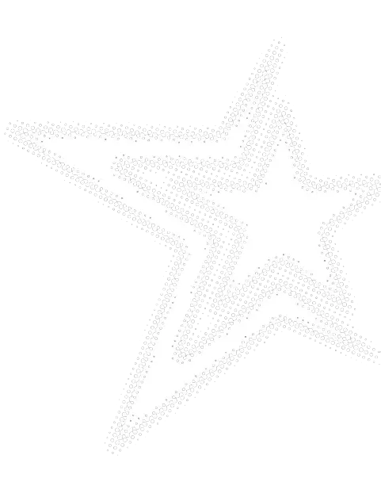
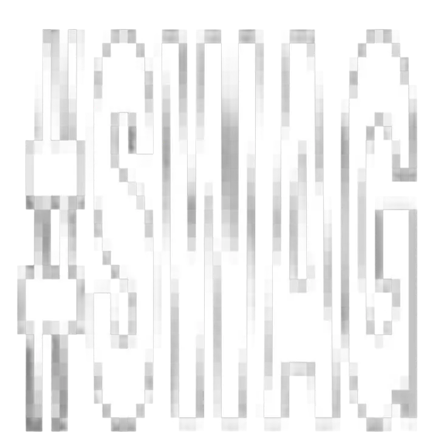
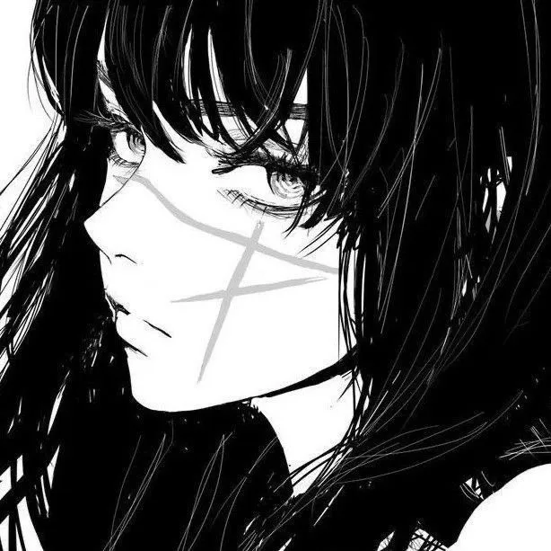

Technologies
Core
Familiar with
Game Engine
Other



Hello, I’m , based in Brazil. I am preparing to study computer engineering at UFPE while building software and hardware projects.
Core
Familiar with
Game Engine
Other
I am currently studying in high school
© 2026 Daniel Marinho